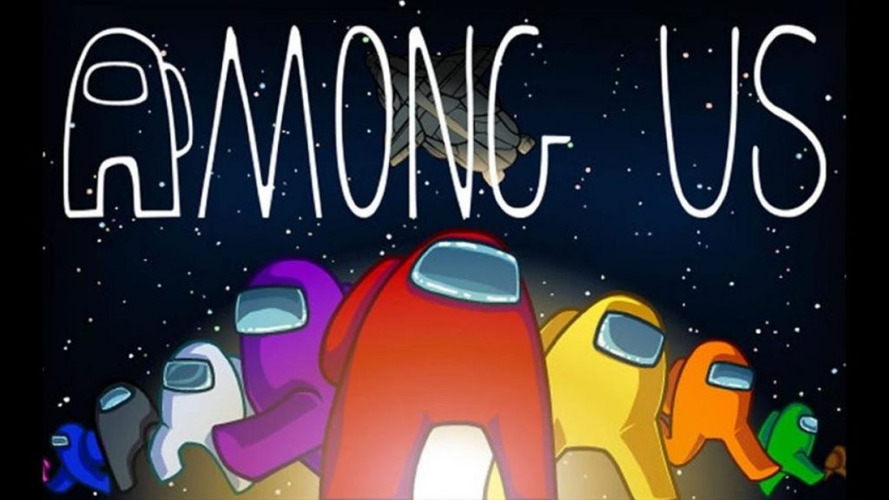

En este lugar encontrarás los 10 videojuegos más buscados y solicitados en el año 2020 y parte de este 2021.
Si te interesa conocer qué videojuegos están de moda, o en las primeras listas de popularidad, quédate hasta el final
>
¿SABES QUENES LIDERAN ESTOS PUESTOS? ¡AQUÍ LO DESCUBRIRÁS!
FIFA 20
FIFA 20 es un videojuego de simulación de fútbol desarrollado por EA Sports. Está disponible en las plataformas de PlayStation 4, Xbox One, Microsoft Windows y Nintendo Switch (Versión Legacy). EA Sports lanzó la demo el 10 de septiembre de 2019 y el juego el día 27 de septiembre del mismo año. Es el primer juego de la franquicia en no estar disponible para PS3 y Xbox 360, siendo FIFA 19 el último en salir para estas consolas.
El extremo del Real Madrid, Eden Hazard, fue nombrado la nueva estrella de portada de la Edición Regular, con el defensor del Liverpool Virgil van Dijk en la portada de la Edición de Campeones.1 El excentrocampista de la Juventus y el Real Madrid, Zinedine Zidane, fue nombrado más tarde como la estrella de la portada de la Ultimate Edition.
El juego presenta VOLTA Football por primera vez, un nuevo modo que ofrece una variación en el juego tradicional de 11 contra 11 y se enfoca en juegos callejeros y de fútbol sala de lados pequeños. Se cree que el modo se centra en la antigua serie FIFA Street. En esta nueva versión del FIFA, se pierde la licencia de la Juventus por el nuevo contrato con eFootball Pro Evolution Soccer 2020 por Konami. El equipo se llama Piemonte Calcio.
AMONG US

Se trata de un juego multijugador online en el que pueden participar de 4 a 10 personas, y donde una o dos de ellas (dependiendo del número de participantes) son asignadas como enemigos que deben matar a los demás sin que el resto sepa de quién se trata. Por lo tanto, unos tienen que intentar no ser descubiertos y los demás tienen que intentar descubrirlos.Así pues, se trata de un juego multijugador online al que pueden jugar de 4 a 10 personas. Cuando te conectas, a dos de ellos se les asigna el rol de impostores, y sólo ellos saben que han sido seleccionados para ello. El resto no tendrán ni idea de quién de los participantes es un jugador normal o un impostor.
Los impostores tendrán que asesinar al resto de participantes sin ser descubiertos, pudiendo sabotear la nave para causar el caos y que así, entre la confusión, puedan intentar actuar. Mientras, el resto de integrantes de la nave tienen que intentar ganar completando todas las tareas que se les asignan o descubriendo y eyectando al impostor fuera de la nave al espacio exterior antes de que acabe con todos.
ANIMAL CROSSING
Animal Crossing es un videojuego de simulación social y de vida que Nintendo ha descrito como un "juego de comunicación". El personaje vive una vida en la que el usuario decide qué hacer, por ejemplo, las tareas que te propongan los vecinos no son obligatorias.Los jugadores asumen el rol de un nuevo vecino que se acaba de mudar al pueblo. El género y la cara del personaje depende de las respuestas que se le den a las preguntas de un gato llamado Fran, el cual nos encontramos en el tren en el que el personaje viaja al pueblo. Hay que tener en cuenta que todos los vecinos son animales, excepto los personajes que juegan, el muñeco que controlas. También hay tareas que los jugadores pueden hacer y objetivos que realizar para su pueblo y su personaje.Uno de los objetivos principales del juego es aumentar el tamaño de la casa. En la casa puedes colocar los objetos que consigues a lo largo del juego. Se puede personalizar de muchas maneras, como el color del techo, paredes y suelos, muebles y música de fondo (para lo que necesitarás un reproductor de música). Estas personalizaciones son puntuadas por la Academia de Artes Decorativas (AAD) todos los domingos. Los jugadores tienen la opción de recibir o no recibir cartas de la ADD al inicio del juego, pero una vez que aceptas, no se puede modificar. Desde el lanzamiento de la versión para móviles, se permite a los jugadores conseguir dinero rápidamente.
FREE FIRE
Garena Free Fire es un juego de battle royal de acción y aventuras solo en línea que se juega en una perspectiva en tercera persona. El juego consta de hasta 50 jugadores que caen de un paracaídas en una isla en busca de armas y equipo para matar a los demás jugadores. Los jugadores son libres de elegir su posición inicial, tomar armas y suministros para extender su vida de batalla. Garena Free Fire es uno de los juegos de battle royale móvil más populares del mundo. Free Fire fue el segundo juego más descargado en Google Play Store en el cuarto trimestre de 2018, y fue el cuarto juego más descargado en el mundo en 2018 en la App Store y en Google Play Store juntos. El título obtuvo aproximadamente 182 millones de descargas en 2018, convirtiéndose en el segundo juego de battle royale móvil más descargado (por encima de Fortnite y detrás de PUBG Mobile), y recaudó aproximadamente 19,3 millones de dólares en ingresos mensuales hasta diciembre de 2018, convirtiéndose en un éxito financiero significativo para Garena.
GRAND THERFT AUTO: SAN ANDREAS
Grand Theft Auto, abreviado GTA, es un videojuego del tipo sandbox abierto, desarrollado por la compañía escocesa Rockstar North (antiguamente DMA Design) y publicado por Rockstar Games en octubre de 1997 para MS-DOS y Microsoft Windows. Es el primer videojuego de la serie Grand Theft Auto. La jugabilidad consiste en una combinación de acción, aventura, conducción, y modo de rol ocasional, con elementos de sigilo y carreras, y que ha generado controversia por su naturaleza adulta y su subtono violento.La jugabilidad consiste en una combinación de acción, aventura, conducción, y modo de rol ocasional, con elementos de sigilo y carreras, y que ha generado controversia por su naturaleza adulta y su subtono violento. El jugador puede elegir entre ocho personajes al principio del juego, estos son: Travis, Katy, Nikki, Divine, Bubba, Troy, Kivlov y Ulrika. El personaje que se elija no afectará a la apariencia del protagonista, ya que será siempre el mismo personaje con jersey amarillo. El jugador también puede introducir un nombre. Esto servirá también para activar los trucos, introduciendo los códigos correspondientes.
El protagonista del juego es libre de hacer lo que quiera en cada una de las tres ciudades que componen los tres niveles de juego. Así, se puede robar coches, venderlos,etcétera. Lo que sea para conseguir puntos, también utilizables como dinero; reunir una cantidad fija de esos puntos es el objetivo final de cada ciudad. También puede hacer diferentes trabajos de oficinas entre otras cosas .
El protagonista empieza el juego con cinco vidas, que puede perder si es atacado.
GRAND THERFT AUTO V
GTA V (Grand Theft Auto V) para PS4, PS3, Xbox One, Xbox 360 y PC es la quinta entrega numerada de la saga superventas de Rockstar Games. Se trata de una aventura de acción de mundo abierto con multitud de misiones en la que encarnamos a tres personajes distintos: Trevor, Michael y Franklin. Además, cuenta con GTA Online, el modo multijugador en lína de GTA 5. El juego sale a la venta el 17 de septiembre de 2013 para PS3 y Xbox 360, el 18 de noviembre de 2014 en PS4 y Xbox One y, por último, el 14 de abril de 2015 para PC.
GTA V se ambienta en Los Santos, ciudad ficticia basada en Los Angeles. En cuanto a GTA Online, el multijugador permite hasta 30 jugadores en línea para explorar el mapeado del juego y disputar distintas misiones de forma cooperativa y/o competitiva, además de celebrarse diferentes eventos para mantener la comunidad de GTA V activa. Actualmente, se rumorea que el juego podría tener un DLC de historia (una expansión argumental) protagonizada por un nuevo personaje, aunque de momento Rockstar no se ha pronunciado.
VALORANT
Valorant es un juego de disparos en primera persona en el que dos equipos de cinco jugadores se enfrentan entre ellos. Además de los consabidos tiros, el objetivo de las partidas es colocar un dispositivo llamado Spike en una zona concreta del mapa. A pesar de encontrarse todavía en esta fase de beta, Valorant ya se ha convertido en el segundo juego con más visualizaciones simultáneas en la historia de Twitch, con 1,7 millones. Por comparar, durante la famosa Copa del Mundo de Fortnite celebrada el verano pasado, el tope fueron 1,69 millones. La primera posición, por cierto, es para LoL, con 1,74 millones. A pesar de encontrarse todavía en esta fase de beta, Valorant ya se ha convertido en el segundo juego con más visualizaciones simultáneas en la historia de Twitch, con 1,7 millones. Por comparar, durante la famosa Copa del Mundo de Fortnite celebrada el verano pasado, el tope fueron 1,69 millones. La primera posición, por cierto, es para LoL, con 1,74 millones.
LEAGUE OF LEGENDS
League of Legends es un juego de estrategia por equipos en el que dos equipos de cinco campeones se enfrentan para ver quién destruye antes la base del otro. Elige de entre un elenco de 140 campeones para realizar jugadas épicas, asesinar rivales y derribar torretas para alzarte con la victoria. League of Legends (también conocido por sus siglas LoL) es un videojuego del género multijugador de arena de batalla en línea (MOBA) y deporte electrónico el cual fue desarrollado por Riot Games para Microsoft Windows y OS X y para consolas digitales. En un principio los servidores estaban alojados en la empresa GOA y fue vendida a la empresa china Tencent Holdings Limited.
El juego fue diseñado para el sistema operativo Microsoft Windows y lanzaron una beta para OS X dejando al poco tiempo el proyecto de lado.Esta beta ha sido mejorada por parte de usuarios del juego, haciendo posible jugar a una versión actualizada de League of Legends.
En octubre de 2012, contaba con 70 millones de jugadores registrados. El juego consta de 3 modos actuales de juego en ejecución: La Grieta del Invocador, El Abismo de los Lamentos y Teamfight Tactics. Los jugadores compiten en partidas, que duran entre 15 y 50 minutos en promedio. En cada modo de juego, los equipos trabajan juntos para lograr una condición de victoria, normalmente destruyendo la estructura central (llamado Nexo) en la base del equipo enemigo después de pasar por alto una línea de estructuras defensivas llamadas Torretas. En todos los modos de juego, los jugadores controlan personajes llamados «campeones», elegidos o asignados en cada partida, que tienen un conjunto de habilidades únicas, con los cuales jugarán toda la partida hasta su conclusión. Desde enero de 2021, hay 154 campeones disponibles, siendo el último añadido Viego, el Rey Arruinado.
FORTNITE
Es un juego de tipo batalla real en el que compiten hasta cien jugadores en solitario o en escuadrones de dos o cuatro miembros. Los jugadores saltan de un autobús que cruza el mapa en el momento que deseen, y empiezan sin armas. Cuando aterrizan, deben buscar armas, objetos útiles y recursos, evitando que los maten mientras atacan a otros jugadores. La acción se divide en rondas con una duración determinada. Al acabar cada ronda, el área segura del mapa se reduce en tamaño debido a una tormenta en ciernes; los jugadores que están fuera de esa área segura reciben daño y pueden morir a causa de ella. Esto obliga a los jugadores a estar en espacios cada vez más cerrados y fomenta los combates entre jugadores. El último jugador o escuadrón vivo es el ganador. Fortnite es un videojuego del año 2017 desarrollado por la empresa Epic Games, lanzado como diferentes paquetes de software que presentan diferentes modos de juego, pero que comparten el mismo motor de juego y mecánicas. Fue anunciado en los Spike Video Game Awards en 2011.
Los modos de juego publicados incluyen Fortnite Battle Royale, un juego gratuito donde hasta cien jugadores luchan en una isla, en espacios cada vez más pequeños debido a la tormenta, para ser la última persona en pie, y Fortnite: Salvar el mundo, un juego cooperativo de hasta cuatro jugadores que consiste en luchar contra carcasas, criaturas parecidas a zombis, utilizando objetos y fortificaciones.
MINECRAFT
Minecraft es un juego de mundo abierto, por lo que no posee un objetivo específico, permitiéndole al jugador una gran libertad en cuanto a la elección de su forma de jugar. A pesar de ello, el juego posee un sistema de logros. El modo de juego predeterminado es en primera persona, aunque los jugadores tienen la posibilidad de cambiarlo a tercera persona. El juego se centra en la colocación y destrucción de bloques, siendo que este se compone de objetos tridimensionales cúbicos, colocados sobre un patrón de rejilla fija. Estos cubos o bloques representan principalmente distintos elementos de la naturaleza, como tierra, piedra, minerales, troncos, entre otros. Los jugadores son libres de desplazarse por su entorno y modificarlo mediante la creación, recolección y transporte de los bloques que componen al juego, los cuales solo pueden ser colocados respetando la rejilla fija del juego. Los jugadores crean «granjas» que son para conseguir un determinado material más fácil por ejemplo una granja de oro. En el juego se pueden encontrar estructuras especiales como aldeas, galerías mineras, templos marinos, pirámides y templos selváticos.


.jpg)